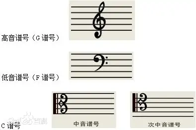
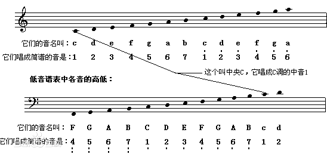
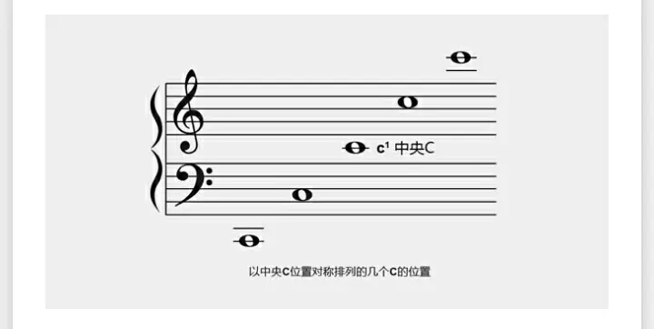

本部分介绍一些最常见的谱号。谱号在音乐中指写在五线谱最左端，用以确定谱表中各线、间的具体音高位置的符号。其一般有高音谱号（G谱号），低音谱号（F谱号），中音谱号（C谱号）等。谱号与五线谱结合在一起，叫做谱表。

高音谱号，又叫“G”谱号。用它来记写的谱表，叫高音谱表，第中央C（do）在下加一线上。第二线，也就是画高音谱号时起笔的那条线，规定音高为G（sol），所以，高音谱号才也叫做“G”谱号。高音谱号的下加一线表示中央C，也就是c1。
低音谱号，表示五线谱四线为f，亦被称为F谱号，谱号亦为英文花体“f”。低音谱号的上加一线表示中央C。高音谱表和低音谱表的对应关系如图所示：

中音谱号为英文字母花体“C”，表示五线谱中间的3线为中央C，又称C谱号。中音谱号在吉他等中音乐器经常用到。
次中音谱号与中音谱号形状相同，但在五线谱中的位置不同，中央对应第四线，读谱规则为第四线中央C，一般应用于吉他等乐器的高音区记谱。
常见的谱表有高音谱表、低音谱表、中音谱表。各种谱表也可以结合在一起。将高音谱表与低音谱表用垂直线和花括号连接在一起则构成大谱表。大谱表及C在上面的位置如图所示：

钢琴谱一般由大谱表记录。一般情况下上面一行高音谱表是乐曲的旋律部分，由右手弹奏；下面一行低音谱表是和弦伴奏部分，由左手弹奏。但有时为了记谱的方便（避免过多加线）左手出现高音谱表，右手出现低音谱表也很常见。由于乐曲演奏的需要，也经常有左手跨越右手弹奏高音区音符，或右手跨越左手弹奏低音区音符的两手交叉的情况。